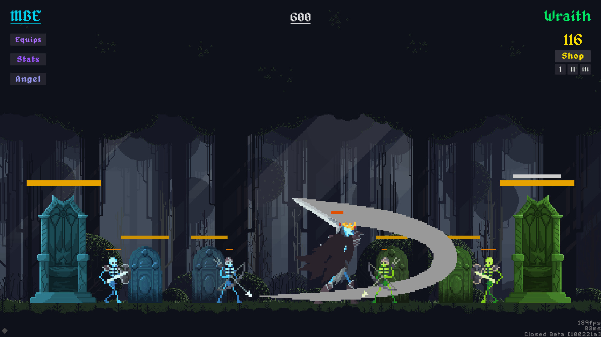
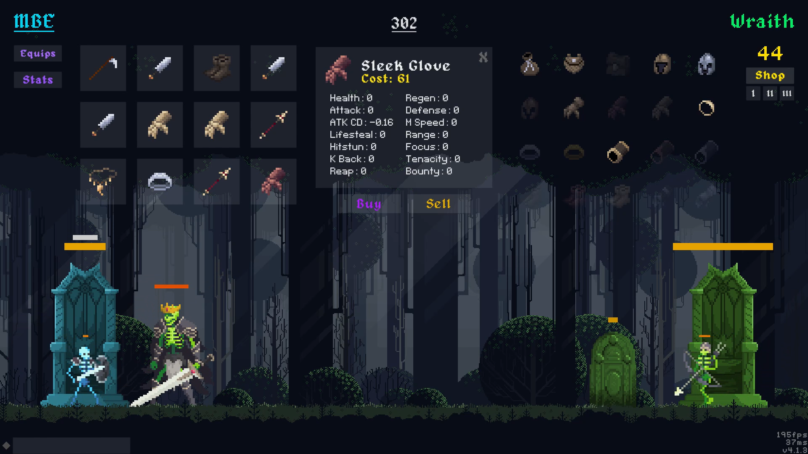
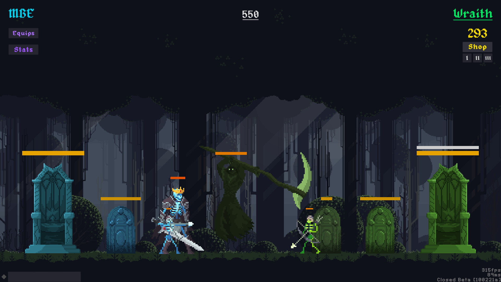
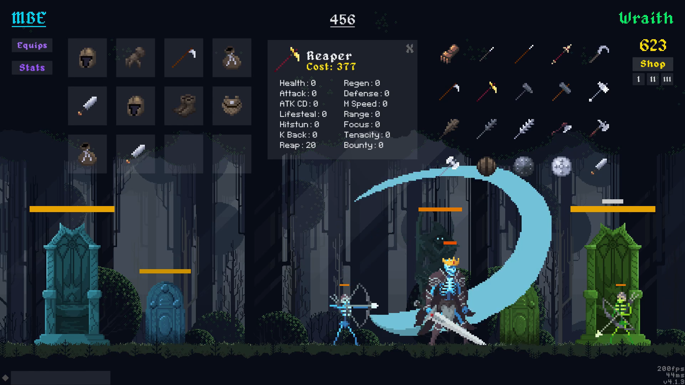

Skeletal Skism
Role :
Independent Developer
Platforms : Steam, Windows
Engine : Unity
Language : C#
Development Time : 7 Months (July 2021 - January 2022)
Genres : Multiplayer, PvP, RTT, Strategy, Autobattler, Singleplayer
Platforms : Steam, Windows
Engine : Unity
Language : C#
Development Time : 7 Months (July 2021 - January 2022)
Genres : Multiplayer, PvP, RTT, Strategy, Autobattler, Singleplayer
Game Info
Skeletal Skism is an Online PVP Real-Time Auto Battler. Players play as a skeleton king, with the goal of destroying the opponent's throne.Players obtain gold from killing enemy units, which is used to buy items in the shop. These items have bonuses like damage, hitstun, and lifesteal that make the player stronger. Each side also has an Angel of Death they can summon once per game to turn the tide of the battle.
In order to win, players can counter their opponent's build and adapt their strategy over the course of the battle. With over 50 unique items, there are over one trillion possible builds in Skeletal Skism.
My Experience
After developing Skeletal Skism, I learned how to create a deterministic system and how to make an online multiplayer game. I also learned a lot more about how to use Unity and C#, since this was the first real game I developed in Unity. Creating this game really helped cement my skills in creating a working online multiplayer game.Some challenges I overcame while making this game include unit animation, collision, and multiplayer networking. One of the toughest obstacles I faced while making this game was syncing the gameplay of both players. That was a large part of why I had to make the game deterministic. It also meant I had to learn how to compensate for lag and other connection problems, and handle those accordingly.
Gallery



